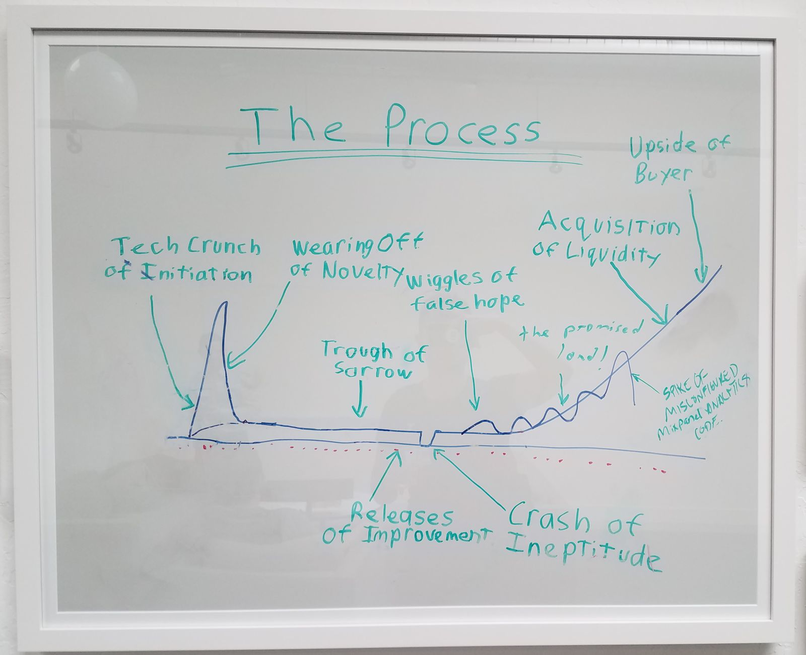
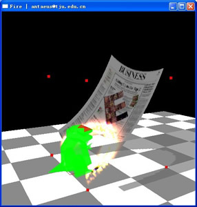

LinkedIn
Twitter
Intagram
Tai An 安泰
Computer Graphics and Animations

^At Y-Combinator 2019
Old stuff
- Physically Based Simulation of Solid Objects' Burning, Transactions on Edutainment, Vol. 7, 2012, pp. 110-120 pdf info
- Physically Based Simulation of Thin-shell Objects' Burning, The Visual Computer, Vol. 25(5-7), 2009, pp.687-696 pdf info
- Combiform: Beyond Co-attentive Play, a Combinable Social Gaming Platform CHI EA '12 CHI '12 Extended Abstracts on Human Factors in Computing Systems, pp.1043-1046 pdf info

Interactive Fire Simulation "Big Dino" 2008